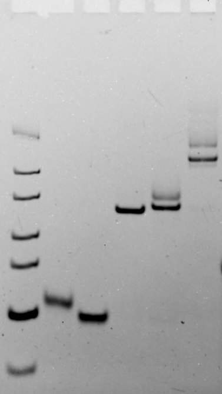

The Formation and Hybridization of Dumbbells

Fig 1. The Formation and Hybridization of Dumbbells
Samples were analyzed on a 10% non-denaturing polyacrylamide gel under 300V, the non-denaturing polyacrylamide were run in 1×TBE at room temperature.
We can obtain a dumbbell structure for hybridization, with lanes 4 and 5 showing the formation of dumbbells, and lane 6 showing the results of dumbbell hybridization.
Validate the formation of Z-DNA using ADAR1, thereby verifying successful hybridization

Fig 2. The Formation and Hybridization of Dumbbells
Samples were analyzed on a 10% non-denaturing polyacrylamide gel under 300V, the non-denaturing polyacrylamide were run in 1×TBE at room temperature.
Lanes 2 and 3 are dumbbell A and dumbbell B, respectively. Lanes 4 and 6 are two types of hybrid dumbbells, and the concentration gradually increases when ADAR1 is added to the system. We can see that as the concentration of ADAR1 increases, the stripes become clearer. This is because ADAR1 binds to the hybrid structure, causing its movement speed in the runway to slow down.